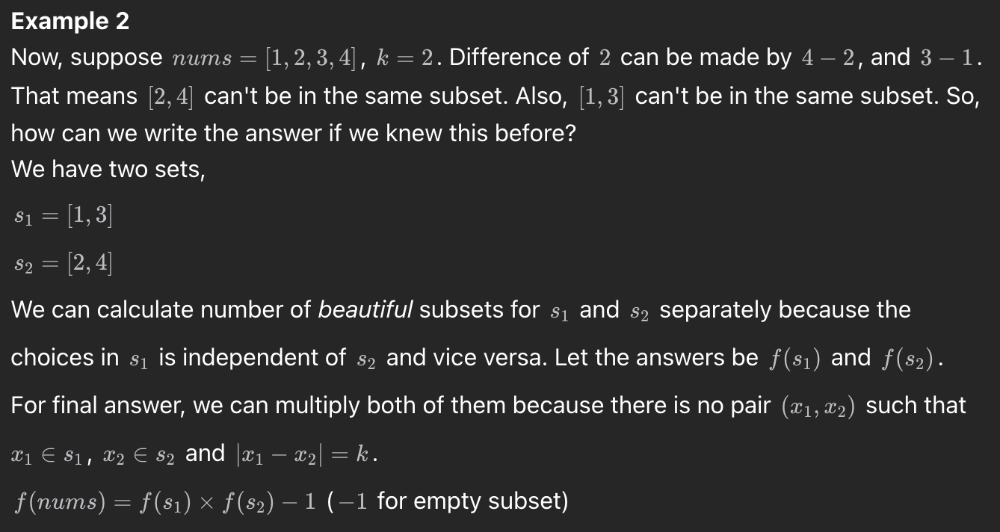
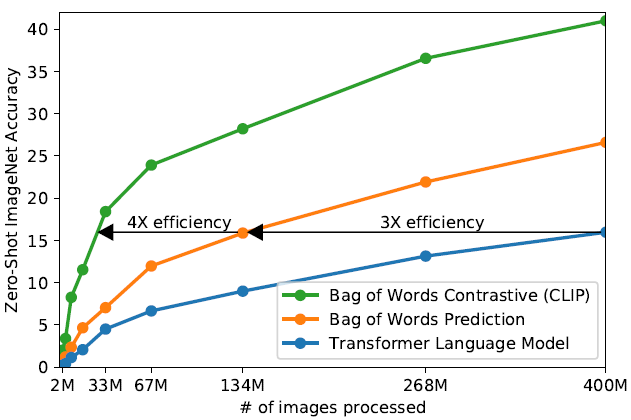

近期会回国一趟, 推荐系统准备在飞机上看. 其他时间看的东西就都挺杂的, 每个部分都单独记录一下显得太短, 以杂谈形势整体记录一下大概差不多.
leetcode(backtrack)
最近leetcode刷到了不少backtrack问题,感觉自己处理起来很不熟练, 简单记录下.
131. Palindrome Partitioning
给出一个字符串, 给出把这个字符串全部分割为回文串的方案.
1 | Example 1: |
回溯写法
1 | class Solution: |
dp
1 | class Solution: |
2597. The Number of Beautiful Subsets
You are given an array nums of positive integers and a
positive integer k.
A subset of nums is beautiful if it
does not contain two integers with an absolute difference equal to
k.
Return the number of non-empty beautiful subsets of
the array nums.
A subset of nums is an array that can be obtained by
deleting some (possibly none) elements from nums. Two
subsets are different if and only if the chosen indices to delete are
different.
1 | Example 1: |
简单分析
有一说一这题的分析还是有一些复杂的, 起码不是非常无脑的dp和回溯.
首先整个字符串上的问题可以划分为求不同子集上面的beautiful subsets. 参考[C++, Java, Python] Evolve Brute Force to DP | Explained 7 Approaches

在这之后, 对于每个counter里面的每一个值, 我们可以take也可以选择skip:
- 如果我们选择take, 那么需要判断i+1的可取性:
- 如果i+1恰好是
s[i]+k, 那我们只能取count(i+2)
- 否则我们取count(i+1)
- 如果i+1恰好是
- 如果我们选择skip, 就直接取下一个i的值, count(i+1)
而take又会面临重复值的问题, 我们可以有2**n - 1种可能(除去空集).
dp
1 | class Solution: |
backtrack
思路类似
1
2
3
4
5
6
7
8
9
10
11
12
13
14
15
16
17
18
19
20
21class Solution:
def beautifulSubsets(self, nums: List[int], k: int) -> int:
result = 1
freq = defaultdict(collections.Counter)
for x in nums:
freq[x % k][x] += 1
for fr in freq.values():
s = sorted(fr.items())
def f(i: int) -> int:
if i == len(s):
return 1
skip = f(i + 1)
take = 2 ** s[i][1] - 1
if i + 1 < len(s) and s[i + 1][0] - s[i][0] == k:
take *= f(i + 2)
else:
take *= f(i + 1)
return skip + take
result *= f(0)
return result - 1
1255. Maximum Score Words Formed by Letters
本来以为差不多了, 结果今天签到又是backtrack.
Given a list of words, list of single
letters (might be repeating) and score of
every character.
Return the maximum score of any valid set of words
formed by using the given letters (words[i] cannot be used
two or more times).
It is not necessary to use all characters in letters and
each letter can only be used once. Score of letters
'a', 'b', 'c', ... ,'z' is given by
score[0], score[1], ... , score[25] respectively.
1 | Example 1: |
题目又长又复杂, 我还理解错了一次, 不过写起来不算难, 需要注意的是每个单词只能用一次, 我一开始以为可以用多次, backtract里面的index并没有加1, 加1之后AC.
backtrack
非常直观的backtrack
1
2
3
4
5
6
7
8
9
10
11
12
13
14
15
16
17
18
19
20
21
22
23
24
25
26
27
28
29class Solution:
def maxScoreWords(self, words: List[str], letters: List[str], score: List[int]) -> int:
ctr = Counter(letters)
s_lst = []
for word in words:
w_score = 0
for char in word:
w_score += score[ord(char) - ord('a')]
s_lst.append(w_score)
word_score_lst = list(zip(words, s_lst))
def ifcontain(word, ctr):
w_ctr = Counter(word)
for k, v in w_ctr.items():
if ctr.get(k) is None or ctr.get(k) < v:
return False
return True
def backtrack(word_idx, tmp_ctr, tmp_score):
nonlocal ans
for idx in range(word_idx, len(words)):
if ifcontain(words[idx], tmp_ctr):
backtrack(idx+1, tmp_ctr - Counter(words[idx]), tmp_score + word_score_lst[idx][1])
ans.append(tmp_score)
return
ans = []
backtrack(0, ctr, 0)
return max(ans) if len(ans) > 0 else 0
140. Word Break II
Given a string s and a dictionary of strings
wordDict, add spaces in s to construct a
sentence where each word is a valid dictionary word. Return all such
possible sentences in any order.
Note that the same word in the dictionary may be reused multiple times in the segmentation.
1 | Example 1: |
backtrack
1 | class Solution: |
dp
1 | class Solution: |
LORA and ControlNet
快速理解AIGC图像控制利器ControlNet和Lora的架构原理
之前只了解了LoRA是给大模型加了一个side adapter从而进行小参数训练让模型能适应特定任务, 但后面看到ControlNet发现原理似乎有点类似, 所以这里仔细了解了一下细节.
LoRA
从数学的角度来说，一个矩阵的信息密度，大体可以用矩阵的“秩”（Rank）来粗略衡量（这也是LoRA中Rank的语义来源）. LoRA的方式是把旁路的矩阵替换成两个低秩矩阵的乘积。比如1000x1000的矩阵，用1000x2 和 2x1000的矩阵来替换，后者两个矩阵乘积运算的结果也是一个1000x1000的矩阵，也就是输入和输出可以和原矩阵的维度相匹配，但秩的上限就只有2了（因为按秩的定义，结果矩阵可以用相乘的两个矩阵的两行或两列数据的四则运算得到所有行列的数据）
所以理论最佳方式是LoRA可以利用参数矩阵包含的信息密度上限, 从而降低需要的参数上百倍.
ControlNet
ControlNet对原模型的参数矩阵并没有进行压缩，而是进行了1比1的精确复刻。当然他并没有复刻所有的模型层次，而是只复刻了部分编码层的模型参数结构。实际应用中，是将每一层编码层的输出结果通过一些线性变换再混合回原模型的解码层中来实现对最终输出效果的干预和控制。
因此ControlNet一般会比LoRA大一些,

其次就是LoRA一般是控制图片风格层面, 而ControlNet一般是从图片层面干预输出, 从而可以让输出的图片和输入的图片有相同动作.
CLIP and Stable Diffusion
之前看的LDM和Stable Diffusion v1其实text encoder用的都是bert, 但后面的SDv2里面就已经换成了CLIP, 顺带一提再后来的SDXL相对于SD又有
- UNet大小层面的升级
- 尺寸和裁剪的处理
- 加了refiner对生成的图片加了细节处理
CLIP
全称Contrastive Language–Image Pre-training, 多模态相关. 在图文并行的模型中表现突出
简单来说就是对图进行编码生成向量v_img, 对文本编码生成v_text,
然后做对比学习, 让图文匹配的
$ v_{img} \cdot v_{text}$向1靠, 让不匹配的向0靠.

为什么不用prediction而用contrast:

LLM Agent
Agent = LLM + Memory + planning skills + tool use
大概来说就是LLM作为中枢大脑, 可以进行自我规划, 对任务进行自行分解, 自我提示, 以及调用外部工具从而达到某些目的的智能体.
代表有AutoGPT等